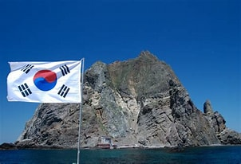

독도는 대한민국의 동쪽 끝에 위치한 섬으로, 울릉도에서 동남쪽으로 약 87.4km 떨어져 있습니다. 독도는 두 개의 주요 섬, 동도와 서도로 구성되어 있으며, 그 주변에는 약 89개의 작은 바위섬들이 있습니다. 독도의 자연은 그 독특한 지리적 위치와 기후로 인해 매우 특별합니다.
독도는 해양성 기후를 가지고 있으며, 연평균 기온은 약 12°C 정도입니다. 겨울에는 기온이 거의 영하로 내려가지 않으며, 여름에는 20°C를 약간 넘는 수준입니다. 연간 강수량은 약 1,300mm로, 비교적 습윤한 편입니다.
